Overview
Design team
2 product designers (including me!)
1 product manager
1 project lead
6 developers
Timeline
May-Aug 2021
Platform
Responsive web, mobile first
What is SDC Foundation?
Social Diversity for Children Foundation (“SDC” for short), our client, is a non profit organization. They provide youth with the platform to empower other youth/children with disabilities, through building community and running a variety of programs.
Why did SDC Foundation want to improve their registration process?
In 2021, SDC Foundation switched from paper/manual registration to a digital registration platform where parents can sign their children up for classes, and volunteers can sign up to be a volunteer.
However, SDC Foundation received feedback from registrants about their new process which caused them to want to seek an improved alternative.
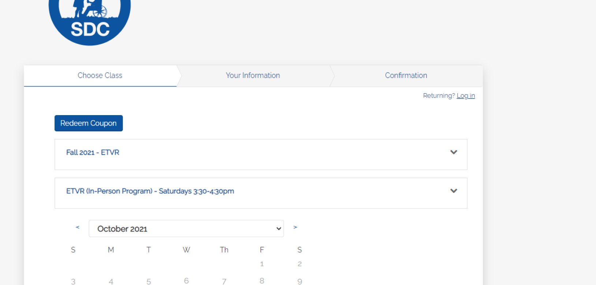Key themes of how registrants felt about the current platform include:
- Many parent registrants were returners, who felt frustrated having to re-enter and fill out the same information for ever new program
- Parents felt frustration and confusion due to language barriers from the platform, which only supports English
- On occasion, parents would accidentally fill out the volunteer forms when signing up their kid, leading to registration mixups that could have been avoided
The product/business problem can be summarized as follows:
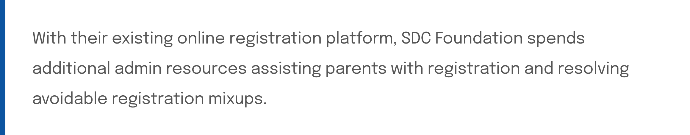The user problem (parent registrants only) can be summarized as follows:
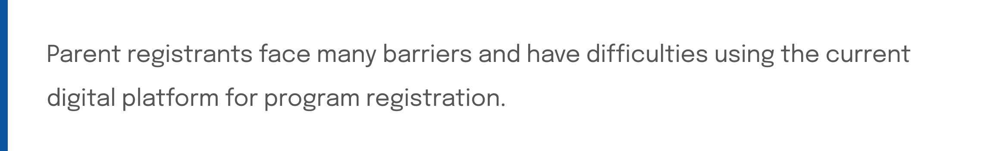Resultantly, SDC requested Blueprint’s help in re-imaging their digital web registration platform. The main design goal can be summarized with the question:
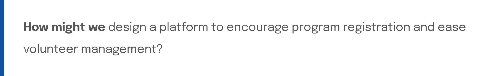User research to better understand our client, and their users ★
Blueprint’s scoping team had already helped scope out information on SDC’s users.
However, secondary research was conducted by the product team (including my fellow product designer, my product manager, and myself), to first-hand empathize with who we were designing for, and to squash any assumptions we had.
User interviews were conducted with 2 volunteers, and 2 program coordinators/teachers (limited based on resources and time). We were unable to speak to parents first-hand, because as a more sensitive user group, SDC wanted to maintain complete privacy of their registrants. It was definitely a challenge to not be able to interview parents, but we worked around this later through lots of testing!
Translating findings into design requirements & constraints
The findings from the user interviews were synthesized and consolidated into pain points, opportunities, and goals.

The big takeaways from identifying pain points, opportunities, and goals, were then used to define requirements for the platform, in order to guide product/design direction.
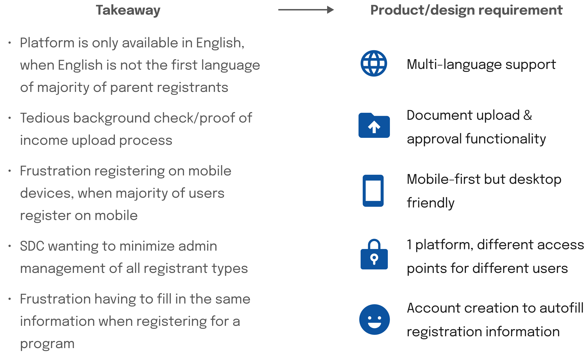Mapping the user journey, to use as the basis of ideation
The user journey was also mapped, to better break down what registrants were thinking and feeling at each stage of the registration process.

Due to the complexity and scale of the registration process, it was anticipated that there would be a lot of cases and sub-flows that would be helpful to visually map out, to use later as the basis of lo-fi wireframes.
Therefore, the user journey map, along with the design requirements identified, were used as a starting point to create a user flow for the new platform, to better organize and conceptualize how the platform would fit in with the processes.
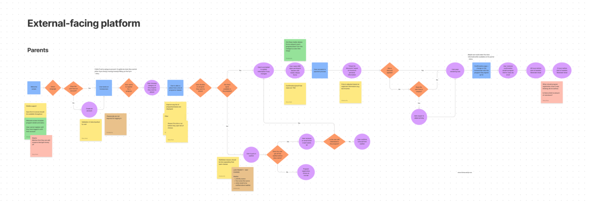Mobile lo-fi explorations
Lo-fi wireframes were then created, building out the screens and architecture based on the user flow created above. Lo-fis were done in mobile first, because it was one of the design requirements.
The initial lo-fis underwent multiple iterations, before project timelines required us to begin testing our mobile lo-fis and translating them to desktop.
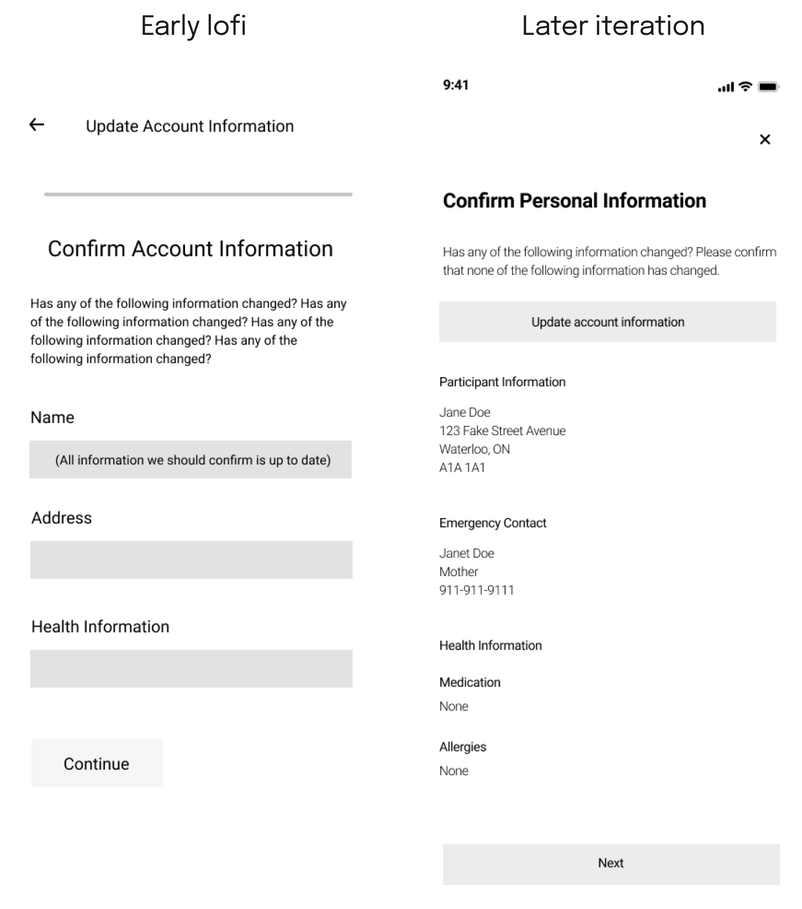Usability testing ★
To obtain feedback from users, we sent a mobile, lo-fi prototype of the platform to parents & volunteers for usability testing. This enabled us to collect feedback, even from parents, while protecting the privacy of individuals.

 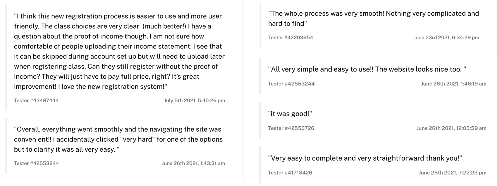
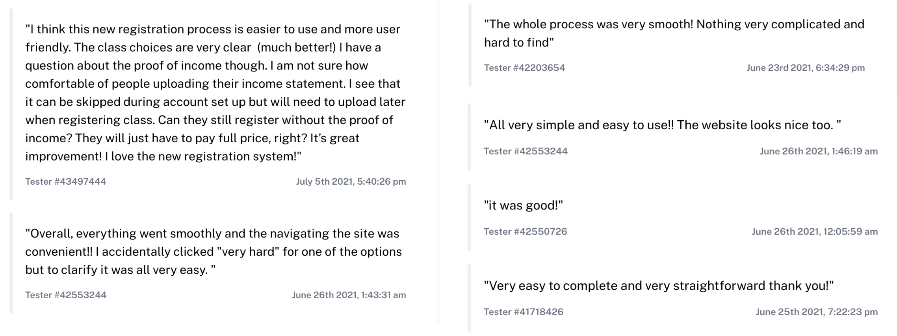
Multiple rounds of testing were conducted. The testing insights informed the design changes that needed to be made to the platform:
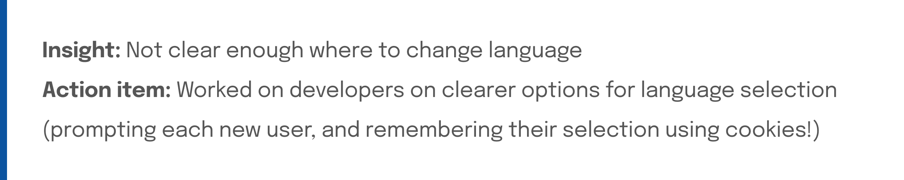 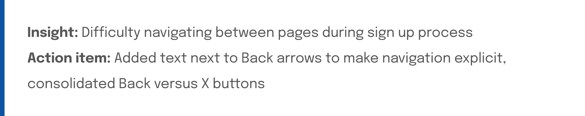 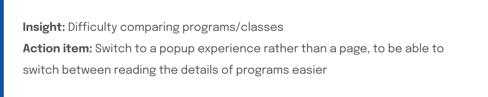Responsiveness
After making the changes from testing, we then pivoted to desktop lo-fis, due to time constraints and cross-functional needs (specifically developers!). One example of mobile lo-fis made responsive to desktop, is shown below:

Exploring & iterating on the main landing page
In moving from mobile to desktop, it was noticed that for the main landing page, there was a lot of extra space we could take advantage of, to improve the program/class browsing experience.
How should the extra space on desktop be used?
Different layouts of landing page on desktop were explored and assessed.
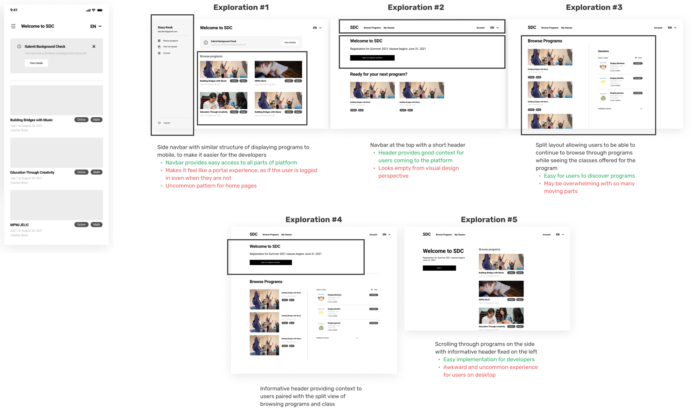 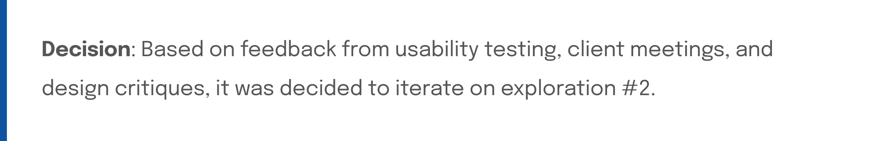Iterating on a selected exploration
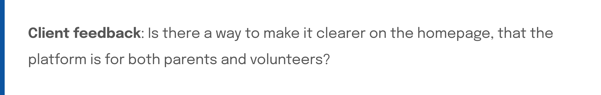The exploration selected previously was iterated upon, to improve and address the client feedback received.
Creating a visual design system
Again, due to time constraints, we then needed to turn our lo-fis into hi-fis. We created a design system for the project, based on the branding & styling of our client’s main website.
Implementing a design system made the process of adding styling and branding to the designs, much smoother.

Final design ★
Desktop
Inviting programs & classes to browse through
Simple account sign up & program registration
Handoff
The project continued into the next term, where another team designed what the internal side of the platform would look like (admin). The second-term team were the ones last in touch with the client, and who handed off the project and designs!
Learnings
- Designing mobile-first while also keeping in mind developer needs: Impact of designing a mobile-first platform with developers coding the desktop experience first
- Form design: Making better forms, as there were lots and lots of them
- Working with a more sensitive user group: Accommodating to needs and being understanding of who we’re designing for while respecting privacy